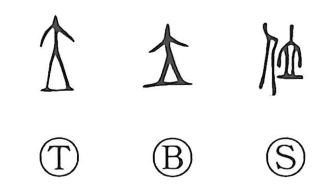

位

Kun: kurai, gurai | On: i
rank ・ position ・ place ・ status
Explanation
This character combines the person graph 人 with 立. The graph 立 itself is formed from 大, a front-facing figure with arms outstretched, set upon 一, the ground line, depicting someone standing upright. With 人 added, the whole image points to a person at a fixed standing spot, and by extension to one’s proper station—kurai, “rank” or “position.” Earlier, 立 alone was used for this idea; later, 位 became the established form.